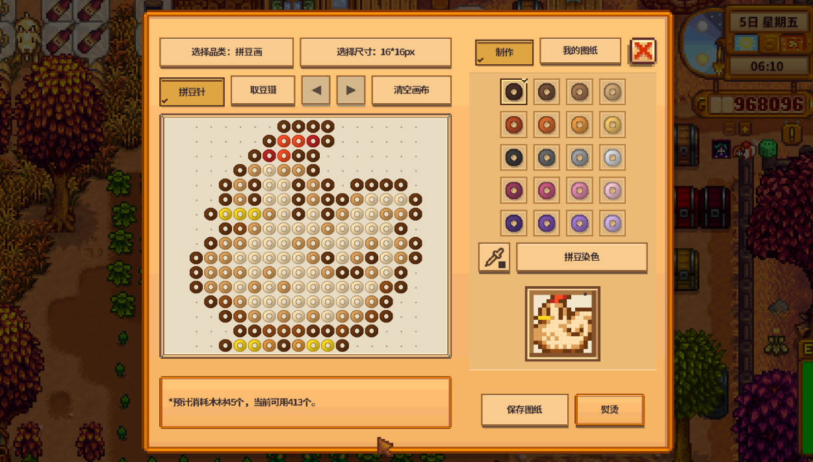
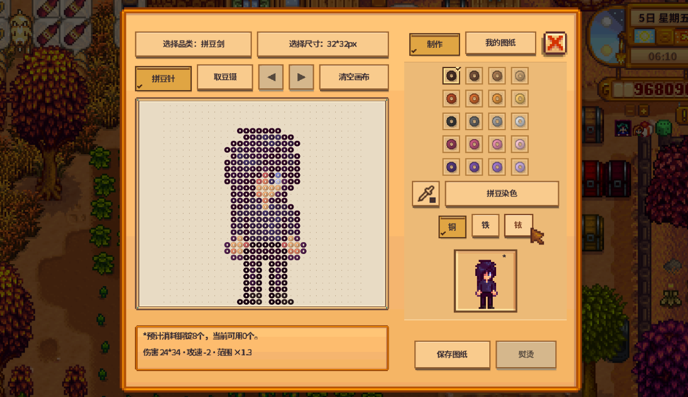
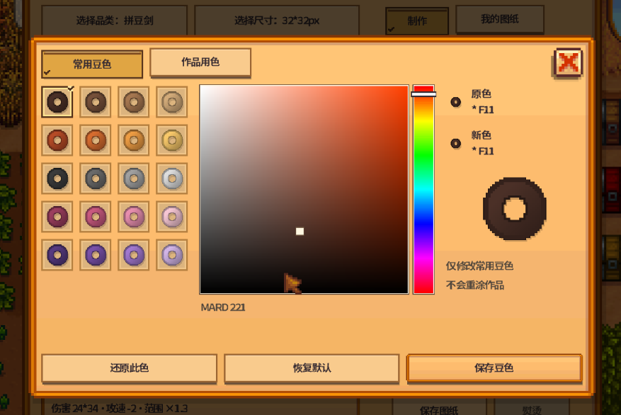
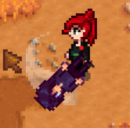
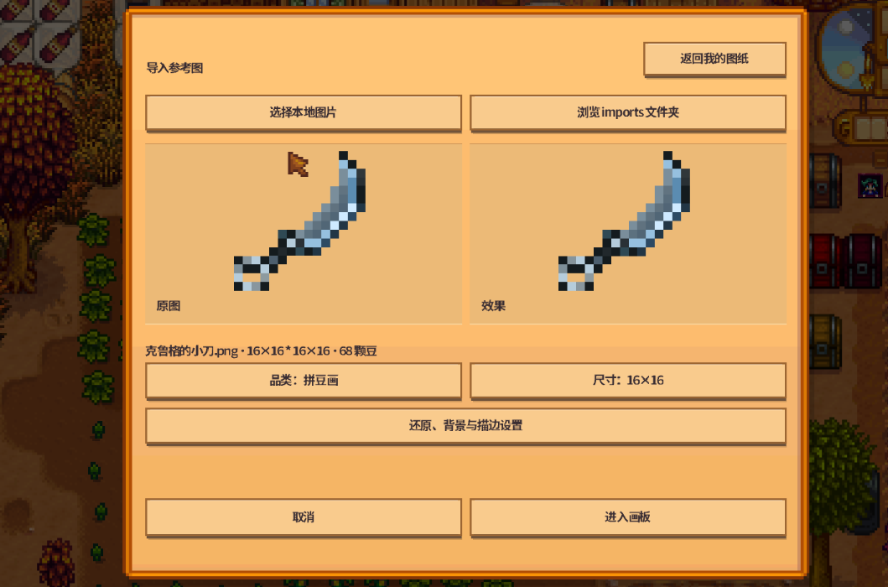
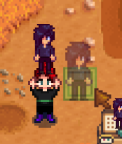

RC7：修复创造作品出售与成品中英文显示
新旧创造作品固定售价1金，可出货；普通作品估价保持不变。所有联机玩家须使用相同 RC7 包。






把能想到的任意图案做成挂画、摆件和武器。 - 自由摆豆、调色、统一换色，导入图片或分享图纸。 - 挂画与摆件带轻微拼豆质感；剑、匕首、锤支持16／24／32格。 - 作品独立估价，可出售；挂画可送给村民，达到6心后次日在适配住宅展示。 - 在线多人候选支持：各自保留图纸与豆色，共用箱子和村民展示位。 需要星露谷1.6、SMAPI 4.5.1或更新兼容版本。将包内 BetterBeads 文件夹放入 Mods，觅食2级后配方在罗宾处购买。 **操作**：左键摆豆，右键擦除，滚轮缩放，中键或空格＋左键平移。Ctrl+S保存，Ctrl+Z／Y撤销重做，Home适应画布。未保存草稿只保留在本次游戏。 从背包和同地图周围5格普通箱子取料。支持中文、英文；Generic Mod Config Menu可选。 欢迎反馈 Bug；如果喜欢这个模组，也请点个 Endorse 支持一下！
# Better Beads · 1.0.0 RC7 Turn your own pixel designs into wall art, ornaments and weapons. - Draw, recolor, import images and share designs. - Subtle fused-bead texture on paintings and ornaments; swords, daggers and hammers in 16, 24 or 32 pixels. - Individual artwork appraisals and selling. Gift paintings to villagers; at six hearts, supported homes display them from the next day. - Online co-op candidate: personal libraries and palettes, shared nearby chests and NPC displays. One user per workbench; separate benches work together. No manual host approval. **Install:** Stardew Valley 1.6 and SMAPI 4.5.1 or a newer compatible version. Place the BetterBeads folder in Mods; install only one copy. Reach Foraging 2 for Robin's letter, then buy the recipe from Robin. Every online player needs this same RC7 package. No split-screen support. **Controls:** Left-click to place, right-click to erase, wheel to zoom, middle-drag or Space + left-drag to pan. Ctrl+S saves, Ctrl+Z/Y undo/redo, Home fits the canvas. Fusing never forces a design save; unsaved drafts last only for this session. Uses your backpack and ordinary chests within five tiles on the same map. Creative Mode follows the host. English and Chinese included; Generic Mod Config Menu is optional. **Release candidate:** Builds and offline checks passed. Real two-player sessions, disconnect recovery, weapon swings and furniture layering still need in-game acceptance. Exit the game and back up saves and customized assets before upgrading. This is not the final stable release. Bug reports are welcome! If you enjoy the mod, please leave an endorsement to support it.